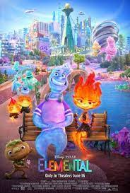
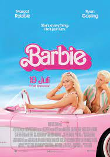
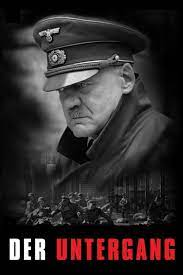
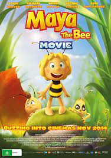
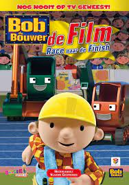
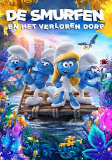
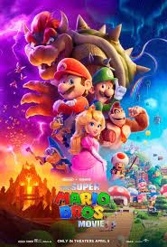

Cars
De film speelt zich af in een wereld die geheel bevolkt wordt
door levende auto’s en andere voertuigen. Centraal staat de rode
racewagen Bliksem McQueen, die alleen lijkt te leven voor het
winnen van wedstrijden en het verkrijgen van roem. Bij aanvang
van de film neemt hij deel aan de laatste race van de Piston Cup
stock car race, waarin hij het onder andere opneemt tegen
veteraan Strip "The King" Weathers en Chick Hicks, een racer die
regelmatig valsspeelt door zijn tegenstanders van het circuit te
duwen. De race eindigt echter op een gelijke stand, waardoor er
nog een beslissende wedstrijd moet gereden worden. Deze vindt
plaats over een week in Los Angeles. Na de wedstrijd besluit hij
meteen hierheen te vertrekken. Hij geeft zijn chauffeur, de
trailer Mack, de opdracht de hele nacht door te rijden. Mack
wordt al snel moe en wordt bovendien speelbal van
Cars infopage
Minions
De Minions zijn een ras van gele, humanoïde wezens, die al sinds
het begin der tijden bestaan en maar voor één doel leven:
kwaadaardige meesters dienen. In de loop der eeuwen werken ze
onder andere voor een Tyrannosaurus rex, een Neanderthaler, een
Egyptische farao, een middeleeuwse koning, een piraat, Dzjengis
Khan, Napoleon Bonaparte en graaf Dracula, maar door hun
onhandigheid zijn ze er steeds de oorzaak van dat hun meester
aan zijn einde komt. Uiteindelijk besluiten ze zich terug te
trekken op Antarctica, maar het gemis van een meester drijft hen
tot een zware depressie. In 1968 besluit de minion Kevin dat het
tijd is om een nieuwe start te maken. Samen met de rebelse
tiener-Minion Stuart en de jonge minion Bob trekt hij de wereld
in om een nieuwe meester voor zijn volk te zoeken. Na een lange
reis arriveert het drietal in New York, waar ze horen dat er een
bijeenkomst voor superschurken gaande is in Orlando, Florida. Ze
liften daarheen. Eenmaal op de bijeenkomst ontmoeten ze Scarlet
Overkill, de eerste vrouwelijke sup
Minions infopage

Elemental
Disney en Pixar’s nieuwe film “Elemental” speelt zich af in
Elementenstad, waar vuur-, water-, land- en luchtbewoners
samenleven. Als Ember, een pittige en pientere jonge vrouw,
vriendschap sluit met Wade, een geestige en gemoedelijke gast,
worden haar ideeën over de wereld die ze bewonen flink op de
proef gesteld. Geregisseerd door Peter Sohn (“The Good
Dinosaur,” “Partly Cloudy” short), geproduceerd door Denise Ream
(“The Good Dinosaur,” “Cars 2”).
Elemental infopage
Avatar
Avatar: The Way of Water' speelt zich meer dan tien jaar na de
gebeurtenissen van de eerste film af. De film vertelt het
verhaal van de familie Sully (Jake, Neytiri en hun kinderen). We
zien de problemen die hen achtervolgen, de moeite die ze doen om
elkaar te beschermen, de gevechten die ze voeren om in leven te
blijven en de tragedies die ze doorstaan.
Avatar infopage

Titanic
In 1996 is de expeditie van Brock Lovett op zoek naar 'The Heart
of the Ocean', een kostbare diamant die oorspronkelijk aan de
Franse koning Lodewijk XVI toebehoorde. Volgens de geruchten is
deze diamant 84 jaar eerder samen met de Titanic in zee
verdwenen. Met twee duikboten gaan ze naar het wrak dat op 3810
meter diepte ligt. Ze vinden een kluis en verwachten dat de
diamant daar nog steeds in ligt, maar in plaats daarvan vinden
ze een tekening van een naakte vrouw die een halsketting met
daaraan de diamant draagt. Wanneer CNN beelden van de tekening
toont, belt een hoogbejaarde vrouw genaamd Rose Calvert op. Ze
zegt dat zij de vrouw op de tekening is. De expeditieleden hopen
via Rose te weten te komen waar de diamant nu is.
Titanic infopage

Barie
Het gaat over de stereotypische Barbie. Zij leeft in de voor
haar utopische wereld Barbieland, bevolkt door verschillende
versies van Barbie en Ken. Een wereld waarin alles perfect
lijkt. Ze heeft een relatie met Ken maar die is er alleen als ze
hem wil zien. Ken is alleen gelukkig als hij bij Barbie is. Hij
wil aandacht en een nauwere relatie maar Barbie heeft meer zin
in andere activiteiten en feesten met vrouwen onder elkaar. Op
een dag gaat het mis. Barbie wordt overvallen door angst voor de
dood en ze krijgt een slechte adem, cellulitis en platvoeten. Ze
komt in een existentiële crisis en vraagt raad bij Weird Barbie.
Zij adviseert haar om naar de echte wereld te reizen en het kind
te zoeken dat met haar speelt. Ken verstopt zich in B
Barbie infopage

Der Untergang
Vijf jonge vrouwen worden in november 1942 naar Wolfsschanze,
het hoofdkwartier van Adolf Hitler te Rastenburg, geëscorteerd
voor een sollicitatie naar de vacature van secretaresse van de
Führer. De 22-jarige Traudl Junge wordt geselecteerd en verricht
vanaf dan de secretariële activiteiten voor de leider van het
Derde Rijk. In 1945 rukken de geallieerden steeds verder op in
de strijd tegen Nazi-Duitsland. De Duitse troepen worden aan
alle fronten tot op eigen grond teruggedrongen e
Der Untergang infopage

Maya de bij
Maya, het vrolijke en nieuwsgierige bijtje dat heel erg gesteld
is op haar vrijheid, haar vriendje Willy en een hele hoop nieuwe
insectenvriendjes zetten alles op alles om de eer van hun
bijenkorf te verdedigen tijdens de jaarlijkse Honingspelen. Zal
team Maya deze spelen kunnen winnen? Zij moeten het in
verschillende proeven opnemen tegen het team van Violet, de
leider van Team Tropolis. Als ze de spelen verliezen, moet de
korf de volledige honingoogst van dat jaar afstaan aan de grote
keizerin van Zoemtropolis.
Maya de bij infopage

Bob de bouwer
Bob de Bouwer en zijn team werken aan hun allergrootste klus
ooit. Ze kunnen wel wat extra hulp gebruiken en schakelen drie
Mega Machines in: Blinker, Smakker en Kraker. Avontuurlijke
kinderfilm over bouwen en samenwerken, gebaseerd op de zeer
succesvolle animatieserie.
Bob de bouwer infopage

FrozenII
Koning Angarr van Arendelle vertelt zijn jonge dochters Anna en
Elsa over het betoverde woud dat in het noorden ligt. Het woud
is de thuis van de Northuldra-stam, een volk dat een dichte band
heeft met de natuur en haar magie. Angarrs vader koning Runeard
stelt een vredesverdrag op tussen de Northuldra en het volk van
Arendelle. Als geschenk bouwt hij een grote dam in het woud,
maar om onbekende reden breekt een gevecht uit tussen de twee
volkeren. Dit maakt de natuurelementen vuur, water, aarde en
wind zo kwaad dat er een grote muur van mist rond het woud
verschijnt, waar niemand nog doorheen kan. Daarna verdwijnen de
natuurelementen. Koning Runeard sterft tijdens het gevecht en de
jon
FrozenII infopage

smurfen
Smurfin en haar vriendjes Brilsmurf, Klungel en Potige Smurf
wagen zich diep in het Verboden Bos om een mysterieus verloren
dorp te redden van de boze tovenaar Gargamel.
smurfen infopage

Mario
Mario en Luigi zijn twee broers die een loodgietersbedrijf
runnen in Brooklyn, New York. De stad heeft te kampen met
overstromende riolen en de twee broers dalen af in het
riolenstelsel om het probleem te verhelpen. Als ze eenmaal diep
onder de grond zijn worden de broers in een groene rioolpijp
gezogen. Luigi belandt in de duistere wereld van de gemene
Koning Bowser, Mario in het Mushroom Kingdom van Princess Peach.
Mario, Peach en Toad slaan de handen ineen slaan om Luigi te re
Mario infopage